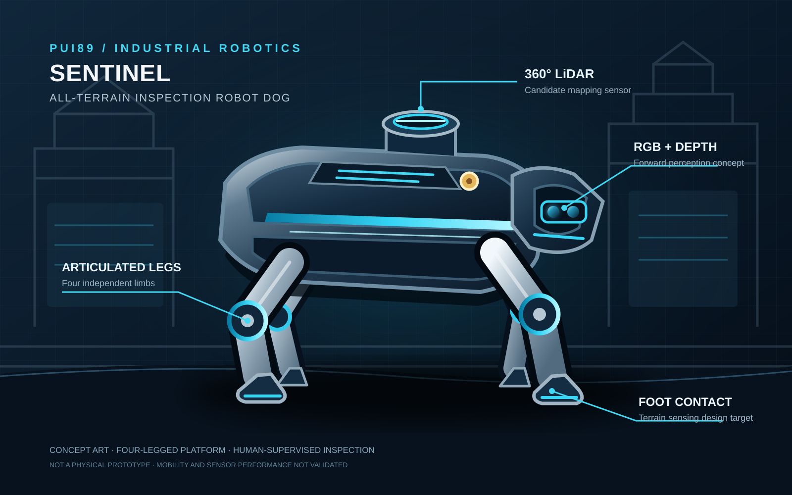

Facilities & infrastructure
Planned inspection of plant rooms, utility areas, industrial buildings and infrastructure assets.
A proposed four-legged all-terrain exploration and inspection robot for supervised missions of industrial facilities, infrastructure, warehouses, logistics yards, ports and selected outdoor environments.

Sentinel is a four-legged robot for supervised exploration and inspection across industrial facilities, infrastructure, rough outdoor terrain and selected abandoned or hard-to-access sites. Entry requires site-owner authorisation and a documented safety assessment. It is distinct from PUI89 AI NOMAD, a separate compact dog-inspired four-wheel outdoor mobile assistant robot.
Safety boundary: “All-terrain” is a development ambition, not a guarantee. Abandoned or hazardous sites require prior authorisation, structural and environmental clearance, and a verified safe route. Sentinel must not enter unstable structures, deep water, hazardous atmospheres or unverified terrain; remote observation from a cleared safe area may be considered instead. Human oversight remains mandatory.
Prototype budget: Not yet established. No verified BOM, supplier quotation or approved prototype budget is available. No prototype or validated field capability is claimed.
Sentinel is in concept and engineering-requirements development. Software workflows and simulation may be developed before hardware procurement. No physical robot, integrated sensor suite, validated mobility envelope or field deployment is claimed.
Planned inspection of plant rooms, utility areas, industrial buildings and infrastructure assets.
Planned inspection rounds in warehouses, logistics yards, ports and authorised cargo areas.
Research targets include paved paths, gravel, grass, firm soil, moderate slopes, steps and selected uneven ground.
Four articulated legs with controlled walking, turning, sidestepping and reversing; adaptive gait and foot placement; centre-of-mass management; IMU and joint/foot-state estimation; slip, stumble and fall-risk detection; supervised recovery behaviours. Strong, agile and stable locomotion is an engineering target, not a verified capability.
Sentinel is the all-terrain exploration and inspection quadruped. PUI89 AI NOMAD is a separate compact dog-inspired four-wheel outdoor mobile assistant robot. Sentinel uses four articulated legs; NOMAD uses four wheels. Their missions, mechanical designs and safety envelopes must not be conflated.
Terrain access, traction, stability, slope limits, step height, payload, weather protection and endurance require engineering definition and physical validation. Cliffs, deep water, unstable structures, hazardous atmospheres, inaccessible gaps and conditions outside the validated operating envelope are no-go conditions. Unknown footing or localisation requires stop / safe hold and operator review.
Scene, object, surface, asset and visible-condition perception.
Speech and acoustic-event awareness for authorised operator interaction.
Align permitted image, audio, text, map and sensor observations with provenance and uncertainty.
State estimation, mapping, localisation, terrain assessment, gait and motion planning.
Mission decomposition, task planning, event response, escalation and recovery proposals.
Independent operating limits, permissions, fault containment, safe hold and emergency-stop policy.
Candidate baseline sensors: RGB camera, depth sensing, 360° LiDAR, IMU, joint/foot-state sensing and audio. Thermal imaging and calibrated atmosphere instruments are optional mission-specific candidates. No sensor is assumed to be selected, purchased, installed or validated.
RGB, depth and LiDAR cannot certify breathable air or detect every hazardous gas. Where atmosphere risk exists, use suitable calibrated instruments and site-authorised procedures; if the atmosphere is unknown or unsafe, do not enter.
These are proposed tasks. Each requires separate software, hardware, safety and field validation before capability claims.
Before any authorised container or confined-area entry, assess doorway clearance, internal geometry, floor condition, overhead/cargo hazards, localisation, communications, atmosphere and a safe exit route. If clearance, footing, atmosphere, localisation or egress is unknown, Sentinel must not enter; it must stop and request operator assessment. Entry is not a baseline validated capability.
The robot does not autonomously make consequential decisions. The operator retains mission authority. Safety control must be independent of AI model outputs and support permission checks, speed/terrain limits, fault detection, safe hold, emergency stop and controlled recovery. No person identification, biometric profiling, accusation, detention, search or enforcement functions are part of Sentinel.
Common software contracts: Observation, WorldState, ActionProposal and FailureReport. Preserve source provenance, timestamps, uncertainty, abstention reasons and fault outcomes. AI may propose an action; safety controls and authorised humans determine whether it is permitted.
Use the NIST AI Risk Management Framework as one AI lifecycle reference. Applicable machinery, robot, electrical, battery, radio, privacy and site-safety requirements must be selected by qualified specialists for the actual design and deployment jurisdiction. References are not certification.
Current public evidence is limited to concept and documented requirements. Simulation results, software tests, bench tests and real-world validation must be reported separately.
Robotics engineers, industrial inspection specialists and safety professionals can review requirements, simulation scenarios and validation plans.
Discuss support or collaborationOpen Sentinel engineering repository ↗Scan to open this exact English project page. The QR code is a static image hosted by PUI89; it does not use a redirect or paid QR service.
A supervised intelligence interface for authorised exploration and inspection. The language model communicates findings; bounded task logic evaluates evidence and proposes next steps.
Summarise inspection logs, explain observed anomalies and answer operator questions using retrieved, time-stamped evidence. Unknowns and conflicting observations must remain visible.
Prioritise anomalies by evidence, severity and uncertainty; support supervised route/task planning, safe-stop decisions and escalation. Never infer intent or identity from appearance.
Operator console, concise alerts, voice/text reporting and reviewable event timelines. Require operator confirmation for consequential actions.
Safety & human oversight: The LLM cannot directly command locomotion or security responses. Human authority, access permission, safe-stop behaviour and audit records remain mandatory.
Status: Proposed product capability scope for design and development. This does not claim that models or functions are installed, implemented or validated.
Inspection-specific perception and task support built on the Shared AI Core.
Rights-cleared industrial datasets, calibrated sensors, repeatable simulation, fault injection, controlled mobility tests, false-alarm analysis and human-factors evaluation. Every sensor and task requires independent validation.
Evidence status: Proposed product scope. Planned capabilities are not claims of implementation, prototype completion or field validation.
Sentinel is designed to interpret authorised, traceable evidence across multiple modalities for supervised inspection. Multimodal Intelligence is a general-purpose inspection capability—not narcotics screening.
Each observation must retain provenance, timestamp, quality, calibration state, uncertainty and availability. Missing, stale, conflicting or degraded inputs must be made explicit; the system should abstain when evidence is insufficient.
Current boundary: No complete sensor suite or validated multimodal runtime is claimed. Narcotics detection, X-ray screening and chemical identification are outside Sentinel's current product scope.
Maturity: Specified — product and engineering requirements documented. Evidence status: PARTIAL.
Recent progress: A representative warehouse inspection mission profile was merged, with supporting robot-geometry and joint-load-case documentation.
Not established: a physical quadruped, integrated sensor suite, validated gait/terrain traversal, measured durability, actuator performance or field safety.
Next evidence gate: complete a permitted site survey; define mission route, operating envelope, hazards, sensor needs and measurable acceptance criteria; then close mass/actuator budgets and prepare separately labelled simulation, bench and controlled-prototype protocols.
Representative warehouse mission PR #224 ↗ · Site-survey worksheet PR #225 (open) ↗
Last reviewed: 8 November 2026 · Review period: November 2026
Coloured markers identify improvement dimensions, not certification or completed implementation.
Status: ● Framework guidance published · ● Project evidence review pending · ● Unverified / not assessed
Recommendations only; maturity changes require repository evidence, repeatable tests or controlled validation. Software tests do not establish physical product safety or certification.
PUI89 ENGINEERING STATUS
Development stage: Formal stage assessment pending. No maturity score or completion percentage is claimed.
These indicators are intentionally unscored until a dated review links each assessment to verifiable repository evidence, reproducible tests and applicable validation. A coloured marker identifies the dimension; it does not represent a score.
PUI89 EVIDENCE STANDARD
PUI89 Sentinel — All-Terrain Exploration & Inspection Robot — Not yet scored
Completed evidence-backed strength reviews: 0. This is a review-record count, not a statement that no development or testing has occurred.
Assessment weights: Technical capability 25 · Testing and evidence 25 · Safety and reliability 20 · Engineering maturity 15 · Documentation and reproducibility 10 · Real-world validation 5.
Scores will appear only after a dated review records its scope, version, evidence, findings, limitations and next actions. Concepts, planned features and unrun tests receive no credit. Simulation results do not prove physical-world performance.
PUI89 / AI TECHNICAL VISUAL

The first site, asset, inspection task and operating envelope remain to be defined with the founder and relevant domain stakeholders. Confirm access permission, hazards, environmental limits, human roles, emergency/retreat plan and measurable acceptance criteria before choosing sensors, locomotion hardware or compute. Hardware selection is intentionally gated on this mission definition.
PUI89 PRODUCT UPDATE · 18 NOV 2026
A four-legged, dog-shaped ground robot concept for supervised inspection in factories, industrial infrastructure, rough outdoor areas and selected confined spaces that people may find difficult or risky to enter.
Computer vision, sensor fusion, SLAM, 3D mapping, edge AI, terrain perception, quadruped gait and motion control, anomaly cues, telemetry and operator alerts. Thermal or calibrated atmosphere sensors are mission-specific options.
Industrial operators, infrastructure teams, warehouses, inspection services, researchers and emergency-response organisations conducting authorised reconnaissance.
Safety boundary: “All-terrain” is an engineering goal, not a guarantee. No physical prototype, sensor integration, gait performance or field deployment is claimed. No autonomous enforcement or hazardous entry based on camera/LiDAR alone.
ภาษาไทย: Sentinel เป็นแนวคิดหุ่นยนต์ภาคพื้นดิน 4 ขา รูปร่างคล้ายสุนัข สำหรับสำรวจโรงงาน โครงสร้างพื้นฐาน พื้นที่รกร้าง และบริเวณแคบที่เข้าถึงยาก ใช้กล้อง LiDAR/Depth, IMU และเซนเซอร์ข้อต่อร่วมกับ AI เพื่อทำแผนที่ ประเมินพื้นผิว ตรวจจับสิ่งกีดขวางและความผิดปกติ แล้วส่งรายงานให้เจ้าหน้าที่ตัดสินใจ ยังไม่มีต้นแบบหรือการทดสอบภาคสนามที่ยืนยันความสามารถดังกล่าว
Perceive → Understand → Predict → Decide → Act. Sentinel is a supervised quadruped exploration and inspection concept for authorised environments.
Quadruped gait and foot-contact research, slip/stumble cues, balance state, safe hold, supervised recovery, operator alerts, bounded proposals and edge-compute fallback.
Evidence boundary: four-legged product concept only. No integrated sensor payload, validated gait, hazardous-atmosphere entry or field performance is claimed. “All-terrain” is an engineering ambition, not a guarantee; human operators retain authority.
PUI89 · LOCAL-FIRST USER EXPERIENCE
Essential warnings and system status must appear directly on the product's integrated display or its appropriate local operator station. A smartphone app, account, pairing, internet connection or remote service must never be required for critical alerts, safe stopping or essential recovery.
Information · Advisory · Warning · Emergency
Each message should identify what happened, the affected area or subsystem, event time and source, confidence or uncertainty, the recommended safe action, and whether human acknowledgement is needed. Missing, stale or conflicting evidence must never be presented as confirmed or safe.
Keep active alerts and timestamped history locally, including acknowledgement and cleared state. Essential alerts should continue during internet/cloud loss where technically feasible. Optional mobile notifications may only mirror local alerts. Report sensor obstruction, stale data, communication loss and internal faults; define a safe response and never auto-resume hazardous operation.
Design requirement only — not evidence that a display, alert system or hardware has been installed, tested or certified. Product conformance remains Unknown / Not Tested until traceable evidence exists.
PUI89 · INCIDENT EVIDENCE & HISTORY
When PUI89 Sentinel detects an abnormal condition, create a local incident record. Product-specific evidence may include: Terrain and route observations, obstacles, environmental anomalies, localisation/sensor faults, mission-state changes and operator interventions. Records help reconstruct what the robot observed and why it entered safe hold.
Show a concise warning and event summary on the product display, with audible tones and spoken alerts appropriate to severity. Users can press to read full details, inspect saved evidence images and replay the voice alert from the product display or local console. If no image was actually captured, say so; never generate an image and present it as evidence.
Provide READ / VIEW HISTORY with year → month → day navigation. Users can open summaries, read full alerts, view saved images and browse earlier/later incidents. Every image shows event date, time and incident ID, plus clear labels for incomplete or uncertain data.
History must be reviewable without a phone, app or internet. Warn when storage is nearing capacity; never automatically delete or overwrite important evidence. Export and recovery remain user-controlled.
Design requirement only. Image capture, date-based recall, voice replay and evidence preservation remain Unknown / Not Tested until verified.
The product must work without the app. Safety must work without connectivity. The QR code, smartphone app, Wi-Fi, internet and cloud services are optional additions—not prerequisites for reading essential instructions, supported basic local operation, local stop/emergency stop or safe shutdown.
These are proposed engineering requirements, not claims of implemented or validated capabilities. See the PUI89 Offline Independence & Connectivity Resilience Standard v1.0. Product-specific implementation and test evidence must be reviewed before any customer-facing capability claim.
In-box printed manual requirement: the complete printed User Manual and printed Quick Start & Safety Guide must be supplied inside the product box. Both must be readable immediately without a smartphone, QR scan, account, app, Wi-Fi or internet. QR and URL are supplementary only.